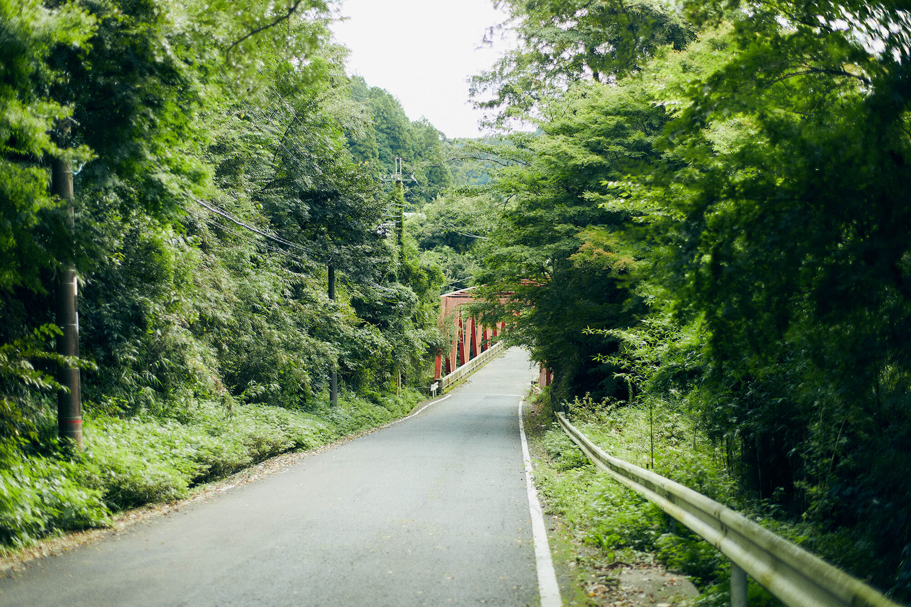
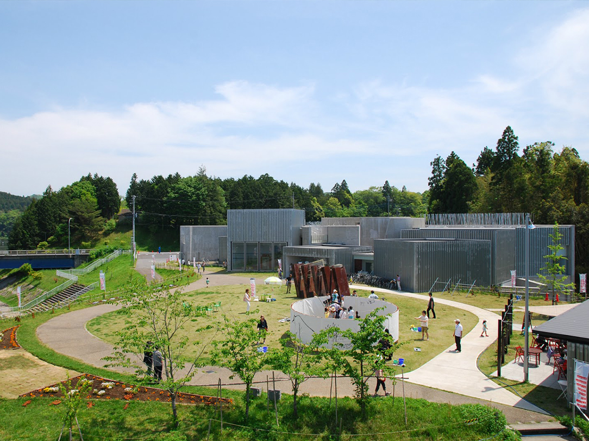
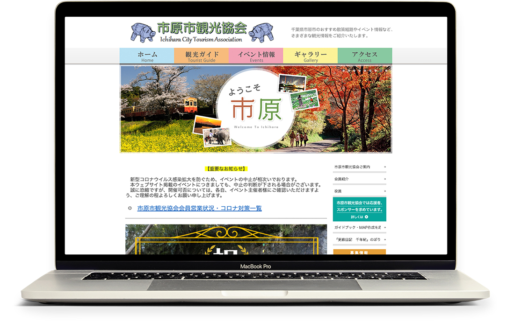

市原市には33箇所のゴルフ場があり、日本一の数を誇ります。市内ゴルフ場を巡り豪華な特産品がもらえるスタンプラリー「いちはらゴルフ場巡り33」やゴルフ未経験の方が手軽にゴルフ場の本格コースでの体験を楽しめる「手ぶらdeゴルフ」など、ゴルフを様々な方に親しんでいただく「ゴルフの街いちはら」の取り組みを行っています。
公式サイトへ市原湖畔美術館は、現代アートを中心とした企画展や市収蔵作品の展示のほか、子供から大人まで楽しめる体験型ワークショップやイベントも多数開催しており、敷地内には高滝湖を眺望できる高さ28mの藤原式揚水機を模した展望塔があります。また、併設するイタリアンレストラン「PIZZERIA BOSSO」では、千葉県産の旬の食材等を使って薪窯で焼き上げたピザが人気となっております。
公式サイトへ
